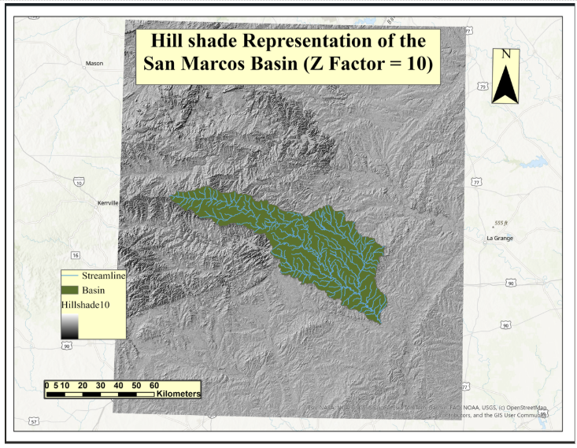
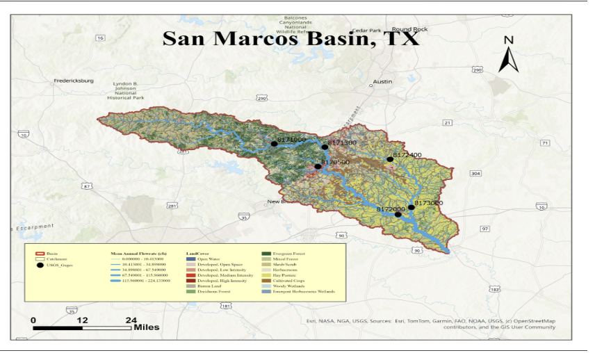
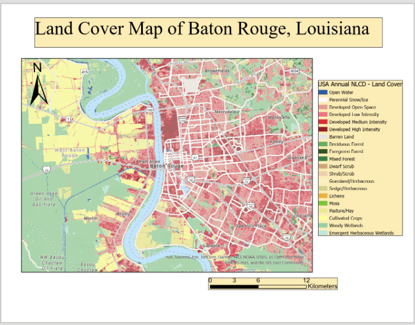
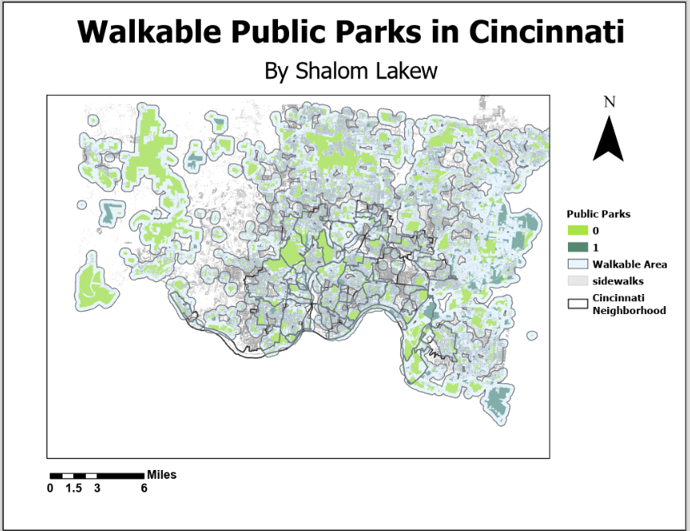

Watershed Terrain & Precipitation Analysis
DEM-based terrain and hydrologic analysis using ModelBuilder, zonal statistics, and precipitation interpolation.
GIS Professional | Environmental GIS | Hydrology | Remote Sensing
GIS PORTFOLIO
I am a GIS professional with an M.S. in Geographic Information Systems and a background in Earth and Environmental Science. My work focuses on spatial analysis, hydrology, remote sensing, environmental mapping, and geospatial visualization.

SELECTED WORK

DEM-based terrain and hydrologic analysis using ModelBuilder, zonal statistics, and precipitation interpolation.
Integrated land cover, catchments, stream networks, basin boundaries, and USGS monitoring stations into a structured GIS database.

Compared development, vegetation, wetlands, and agricultural land across Baton Rouge, Buffalo, and Omaha using NLCD data.

Used buffer-based spatial analysis to examine walkable access to parks and identify areas with more limited green-space accessibility.
TOOLS & METHODS